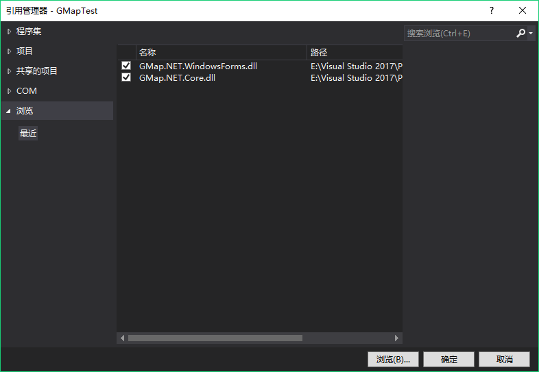
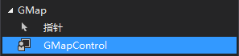
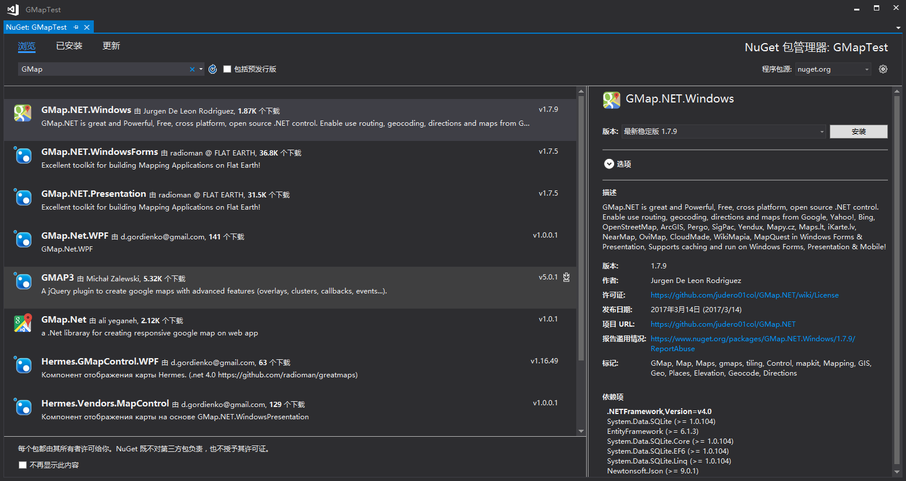
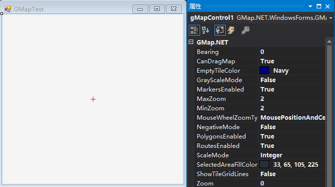
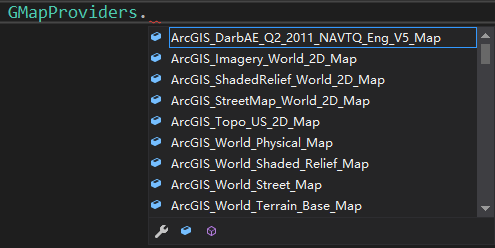
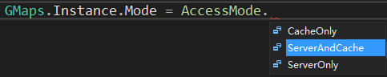
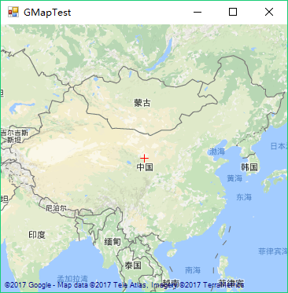
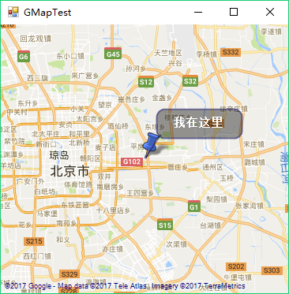
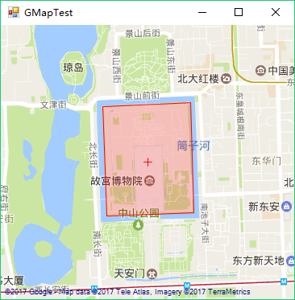
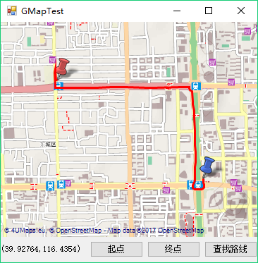

GMap.NET是一个强大、免费、跨平台、开源的.NET控件，它在Windows Forms和WPF环境中能够通过Google, Yahoo!, Bing, OpenStreetMap, ArcGIS, Pergo, SigPac等实现路径规划、地理编码以及地图展示功能，并支持缓存和运行在Mobile环境中。
本文介绍了从下载安装到如何使用GMap.NET。
本文所使用的GMap.NET版本为1.7稳定版。
下载和安装
下载库文件安装
从这里下载，解压后得到两个文件（GMap.NET.Core.dll 和 GMap.NET.WindowsForms.dll）。
然后在项目中添加引用。

添加GMapControl到工具箱。在“选择项”时，选择“GMap.NET.WindowsForms.dll”文件即可添加。

使用NuGet安装

添加地图控件
拖拽GMapControl到Windows Form中，可看到控件中心有个小十字。查看属性，你会发现GMap.NET的一些特有属性。通过设置这些属性可以配置地图的行为，但是不能设置其内容。

- Bearing - 按照指定的度数向左旋转地图
- CanDragMap – 是否启用鼠标右键拖动（平移）地图
- EmptyTileColor – 设置没有数据的切片所显示的颜色
- MarkersEnabled – 是否显示定义的标记，同PolygonsEnabled和RoutesEnabled
- ShowTileGridLines – 显示网格线
- Zoom，MinZoom和MaxZoom - 缩放级别
GMap.NET支持多种地图源，定义地图源需要在代码中去设置。可以在GMapControl的 Load 事件中添加如下代码：1
2
3
4
5
6this.gMapControl1.MapProvider = OpenStreet4UMapProvider.Instance; // 设置地图源
GMaps.Instance.Mode = AccessMode.ServerAndCache; // GMap工作模式
this.gMapControl1.SetPositionByKeywords("北京"); // 地图中心位置
//使用经纬度设置地图中心
//this.gMapControl1.Position = new GMap.NET.PointLatLng(39.923518, 116.539009);
① MapProvider：设置地图源，输入GMapProviders可以看到GMap所支持的所有地图源。

② GMaps.Instance.Mode： GMap可以从服务器、本地缓存、服务器或本地缓存获取数据。这适用于在应用程序中创建的所有GMap控件实例，只需要设置一次该值。

③ 设置地图中心位置可以使用关键字或者经纬度。
④ 地图显示结果。按住鼠标右键可以拖拽地图，当然也可以设置其他键来拖拽。
1 | this.gMapControl1.DragButton = MouseButtons.Left; |

添加标记
1 | //创建一个名为“markers”的图层 |
① GMapOverlay：图层。添加的标记、图形、路径等都是在图层上操作的。
② GMapMarker：GMarkerGoogle，提供标记位置（PointLatLng）和标记样式。 它有两个重载，可以使用GMarkerGoogleType和位图。GMap.NET还提供了GMarkerCross，这是一个简单的十字，不允许使用图标。1
2public GMarkerGoogle(PointLatLng p, GMarkerGoogleType type);
public GMarkerGoogle(PointLatLng p, Bitmap Bitmap);
GMapMarker还可以设置ToolTip。1
2
3
4marker.ToolTipText = "我在这里";
marker.ToolTip.Fill = new SolidBrush(Color.FromArgb(100, Color.Black));
marker.ToolTip.Foreground = Brushes.White;
marker.ToolTip.TextPadding = new Size(20, 20);
③ 地图显示结果。（发现中心的小十字没了吗，因为这是可以设置的）


1 | this.gMapControl1.ShowCenter = false; //隐藏中心十字 |
④ 标记点击事件
标记本身没有任何事件钩子，GMapControl的OnMarkerClick事件即为标记点击事件。在下面的示例中，点击标记会弹出提示框显示ToolTip的文本内容。当然GMap.NET不只有点击事件，还有OnMarkerEnter、OnMarkerLeave。1
2
3
4private void gMapControl1_OnMarkerClick(GMapMarker item, MouseEventArgs e)
{
MessageBox.Show(String.Format("Marker：{0} 被点了。", item.ToolTipText));
}
添加多边形
添加多边形和添加标记的原理是一样的。1
2
3
4
5
6
7
8
9
10
11
12GMapOverlay polygons = new GMapOverlay("polygons");
// 多边形的顶点
List<PointLatLng> points = new List<PointLatLng>();
points.Add(new PointLatLng(39.92244, 116.3922));
points.Add(new PointLatLng(39.92280, 116.4015));
points.Add(new PointLatLng(39.91378, 116.4019));
points.Add(new PointLatLng(39.91346, 116.3926));
GMapPolygon polygon = new GMapPolygon(points, "故宫");
polygon.Fill = new SolidBrush(Color.FromArgb(50, Color.Red));
polygon.Stroke = new Pen(Color.Red, 1);
polygons.Polygons.Add(polygon);
this.gMapControl1.Overlays.Add(polygons);
显示结果。

路径规划
GMap.NET中路径规划主要用RoutingProvider类的以下两种方法：1
2
3
4
5
6
7
8//avoidHighways：是否避免走高速公路
//walkingMode：是否步行
//zoom：查找路径时的zoom
//根据起止点经纬度查找路径
MapRoute GetRoute(PointLatLng start, PointLatLng end, bool avoidHighways, bool walkingMode, int Zoom);
//根据起止点地址查找路径
MapRoute GetRoute(string start, string end, bool avoidHighways, bool walkingMode, int Zoom);
通过点击地图，添加起止点。
添加地图标记之前，需要先清除（Clear）以下，这样可以避免重复点击地图时，显示多个标记。1
2
3
4
5
6
7
8
9
10
11
12
13
14
15
16
17
18
19
20
21
22
23
24
25
26
27
28
29
30
31
32
33
34
35
36
37
38
39int isSetPoint; //设置起止点，1为起点，2为终点
PointLatLng startPoint; //起点
PointLatLng endPoint; //终点
private void btn_SetStart_Click(object sender, EventArgs e)
{
isSetPoint = 1;
}
private void btn_SetEnd_Click(object sender, EventArgs e)
{
isSetPoint = 2;
}
//点击地图添加起止点
private void gMapControl1_MouseClick(object sender, MouseEventArgs e)
{
PointLatLng point = this.gMapControl1.FromLocalToLatLng(e.X, e.Y);
switch (isSetPoint)
{
case 1:
//起点
startPoint = point;
GMapMarker marker1 = new GMarkerGoogle(startPoint, GMarkerGoogleType.red_pushpin);
//清除上一次添加的起点
markerStart.Markers.Clear();
markerStart.Markers.Add(marker1);
break;
case 2:
//终点
endPoint = point;
GMapMarker marker2 = new GMarkerGoogle(endPoint, GMarkerGoogleType.blue_pushpin);
markerEnd.Markers.Clear();
markerEnd.Markers.Add(marker2);
break;
default:
break;
}
}
查找路径
1 | private void btn_FindRoute_Click(object sender, EventArgs e) |
查找路径结果。

如果路径查找结果（route）为null，要么时确实没有结果，要么是GMap封装的地址搜索服务失效。我在写这篇文章时，就无法使用GoogleChinaMap，上图是使用OpenStreetMap的搜索结果。